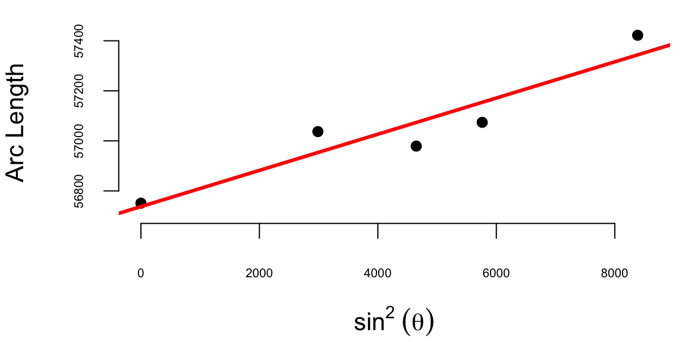

It is remarkable that a science which began with the consideration of games of chance should have become the most important object of human knowledge. Pierre Simon Laplace, 1812
Chapters in Part I developed a Bayesian language for uncertainty, learning, and decisions, including sequential decisions. We now shift emphasis from inference about parameters to prediction of future or unseen outcomes. This shift changes what matters: scalability, out-of-sample performance, and how representation choices influence generalization. One useful distinction for Part II is between pattern matching, understood broadly as function approximation, and statistical learning, where the emphasis remains on inference, uncertainty quantification, and the consequences of modeling assumptions. The next chapters use classical statistical models as stepping stones toward modern machine learning, while keeping uncertainty and decision-making as recurring themes rather than afterthoughts.
Data collected by early telescopes played a crucial role in the development of statistical techniques during the 18th century, just as Internet and mobile devices do in the 21st. Massive astronomical data sets inspired scientists such as Carl Friedrich Gauss, Pierre-Simon Laplace, and Simeon Denis Poisson to devise data-driven methods, including the method of least squares and the Poisson distribution. These methods fundamentally transformed science, shifting the focus from purely theoretical derivation to the rigorous, quantitative interrogation of observational data. The integration of data and statistical methods laid the foundation for modern data science and statistics, demonstrating the power and versatility of data-driven approaches.
In the 18th and 19th centuries data collection was often limited to manual measurements or observations, and the amount of available data was typically much smaller compared to the massive datasets encountered in modern data science. Scientists like Gauss and Poisson often conducted carefully designed experiments, collected their own data, and performed manual calculations without the aid of computers or advanced statistical software. The focus of their work was often on theoretical developments in mathematics, physics and astronomy, and the data was used to test and validate their theories. We can consider one of those studies from the early 18th century.
Example 10.1 (Boscovich and Shape of Earth) The 18th century witnessed heated debates surrounding the Earth’s precise shape. While the oblate spheroid model - flattened poles and bulging equator - held sway, inconsistencies in measurements across diverse regions fueled uncertainty about its exact dimensions. The French, based on extensive survey work by Cassini, maintained the prolate view while the English, based on gravitational theory of Newton (1687), maintained the oblate view.
The determination of the exact figure of the earth would require very accurate measurements of the length of a degree along a single meridian. The final answer to this debate was given by Roger Boscovich (1711-1787) who used geodetic surveying principles and in collaboration with English Jesuit Christopher Maire, in 1755, they embarked on a bold project: measuring a meridian arc spanning a degree of latitude between Rome and Rimini. He employed ingenious techniques to achieve remarkable accuracy for his era, minimizing errors and ensuring the reliability of his data. In 1755 they published “De litteraria expeditione per pontificiam ditionem” (On the Scientific Expedition through the Papal States) that contained results of their survey and its analysis. For more details about the work of Boscovich, see Altić (2013). Stigler (1981) gives an exhaustive introduction to the history of regression.
The data on meridian arcs used by Boscovich was crucial in determining the shape and size of the Earth. He combined data from five locations:
d <-read.csv("../data/boscovich.csv")knitr::kable(d, digits =8)
The arc length is measured in toises, a pre-metric unit of about 6.39 feet. Both the table and the plot show that arc length increases with latitude and that its relationship to \(\sin^{2}\theta\) is approximately linear: \[
\text{Arc Length} = \beta_0 + \beta_1 \sin^2 \theta
\] where \(\theta\) is the latitude. Here \(\beta_0\) is the length of a degree of arc at the equator, and \(\beta_1\) is how much longer a degree of arc is at the pole. Boscovich faced a fundamental aggregation problem: how to distill five distinct, noisy measurements into single, optimal estimates for \(\beta_0\) and \(\beta_1\). His first attempt to answer this question involved calculating ten slopes for each pair of points and then averaging them. The table below shows the ten slopes.
d <-read.csv("../data/boscovich.csv")sl <-matrix(NA, 5, 5)for (i in1:5) {for (j in1:(i -1)) { dx <- d$sin2Latitude[i] - d$sin2Latitude[j] dy <- d$ArcLength[i] - d$ArcLength[j] sl[i, j] <- dy / dx }}rownames(sl) <- d$Locationcolnames(sl) <- d$Locationoptions(knitr.kable.NA ="")knitr::kable(sl, digits =4)
Ten slopes for each pair of the five cities from the Boscovich data
Quito
Cape of Good Hope
Rome
Paris
Lapland
Quito
Cape of Good Hope
0.096
Rome
0.049
-0.035
Paris
0.056
0.013
0.085
Lapland
0.080
0.071
0.118
0.13
plot(d$sin2Latitude, d$ArcLength, ylab ="Arc Length", xlab =expression(sin^2~ (theta)), pch =16, col =as.factor(d$Location))text(d$sin2Latitude, d$ArcLength -25, labels = d$Location)for (i in1:4) {for (j in (i +1):5) { slope <- (d$ArcLength[i] - d$ArcLength[j]) / (d$sin2Latitude[i] - d$sin2Latitude[j]) intercept <- d$ArcLength[i] - slope * d$sin2Latitude[i]abline(a = intercept, b = slope, col =2, lwd =0.8, lty =2) }}
The average of the ten slopes is 0.0667. Notice the slope between Cape of Good Hope and Rome is negative. This is due to the measurement error. Boscovich then calculated an average after removing this outlier. The average of the remaining nine slopes is 0.078. In both cases he used length of the arc at Quito as estimate of the intercept \(\beta_0\). Figure 10.1 (a) shows the line that corresponds to the parameter estimates obtained by Boscovich. Figure 10.1 (b) is the same plot but with the modern least squares line.
(a) Boscovich’s first attempt to estimate the parameters

(b) Modern least squares approach
Figure 10.1: Comparison of Boscovich’s first attempt to estimate the parameters and the modern least squares approach
This is a very reasonable approach! However, Boscovich was not satisfied with it and sought a method that would minimize the sum of the absolute deviations between the data points and the fitted curve. Two years later, he developed a pioneering technique called least absolute deviations, which revolutionized data analysis. Unlike the later least squares approach, this method minimized absolute differences, making it particularly effective in handling measurement errors and outliers.
Armed with his meticulous measurements and innovative statistical analysis, Boscovich not only confirmed the oblate spheroid shape of the Earth but also refined its dimensions. His calculations yielded a more accurate value for the Earth’s equatorial radius and the flattening at the poles, providing crucial support for Newton’s theory of gravitation, which predicted this very shape.
Motivated by the analysis of planetary orbits and determining the shape of the Earth, later in 1805, Adrien-Marie Legendre (1752-1833) published the first clear and concise explanation of the least squares method in his book “Nouvelles methodes pour la determination des orbites des cometes”. The method of least squares is a powerful statistical technique used today to fit a mathematical model to a set of data points. Its goal is to find the best-fitting curve that minimizes the sum of the squared distances (also known as residuals) between the curve and the actual data points. Compared to the approach proposed by Boscovich, the least squares method is less robust to measurement errors and inconsistencies. However, from a computational point of view, it is more efficient and various algorithms exist for efficient calculation of curve parameters. This computational efficiency is crucial for modern data analysis, where datasets can be massive and complex, making least squares a fundamental tool in statistics and data analysis, offering a powerful and widely applicable approach to data fitting and model building.
Legendre provided a rigorous mathematical foundation for the least squares method, demonstrating its theoretical underpinnings and proving its optimality under certain conditions. This mathematical basis helped establish the credibility and legitimacy of the method, paving the way for its wider acceptance and application. Legendre actively communicated his ideas and collaborated with other mathematicians, such as Carl Friedrich Gauss (1777-1855), who also contributed significantly to the development of the least squares method. While evidence suggests Gauss used the least squares method as early as 1795, his formal publication came later than Legendre’s in 1809. Despite the delay in publication, Gauss independently discovered the method and applied it to various problems, including celestial mechanics and geodesy. He developed efficient computational methods for implementing the least squares method, making it accessible for practical use by scientists and engineers. While Legendre’s clear exposition and early publication brought the least squares method to the forefront, Gauss’s independent discovery, theoretical development, practical applications, and contributions to computational methods were equally crucial in establishing the method’s significance and impact. Both mathematicians played vital roles in shaping the least squares method into the powerful statistical tool it is today.
Another French polymath Pierre-Simon Laplace (1749-1827) extended the methods of Boscovich and showed that the curve fitting problem could be solved by ordering the candidate slopes and finding the weighted median. Besides that, Laplace made fundamental contributions to probability theory, developing the Bayesian approach to inference. Most of Laplace’s work was in the field of celestial mechanics, where he used data from astronomical observations to develop mathematical models and equations describing the gravitational interactions between celestial bodies. His analytical methods and use of observational data were pioneering in the field of celestial mechanics. Furthermore, he developed methods for estimating population parameters from samples, such as the mean and variance and pioneered the use of random sampling techniques, which are essential for ensuring the validity and generalizability of statistical inferences. These contributions helped lay the foundation for modern sampling theory and survey design, which are crucial for conducting reliable and representative studies. Overall, Laplace’s contributions to data analysis were profound and enduring. His work in probability theory, error analysis, sampling methods, and applications significantly advanced the field and laid the groundwork for modern statistical techniques. He also played a crucial role in promoting statistical education and communication, ensuring that these valuable tools were accessible and utilized across various disciplines.
Boscovich used what we call today a linear regression analysis. This type of analysis relies on the assumption that the relationship between the independent (sine squared of the latitude) and dependent (arc length) variables is linear. Francis Galton was the person who coined the term “regression” in the context of statistics. One of the phenomena he studied was the relationship between the heights of parents and their children. He found that the heights of children tended to regress towards the average height of the population, which led him to use the term “regression” to describe this phenomenon. Galton promoted a data-driven approach to research that continues to shape statistical practice today. Furthermore, he introduced the concept of quantiles, which divide a population into equal-sized subpopulations based on a specific variable. This allowed for a more nuanced analysis of data compared to simply considering the mean and median. He also popularized the use of percentiles, which are specific quantiles used to express the proportion of a population below a certain value.
Galton used regression analysis to show that the offspring of exceptionally large or small seed sizes of sweet peas tended to be closer to the average size. He also used it for family studies and investigated the inheritance of traits such as intelligence and talent. He used regression analysis to assess the degree to which these traits are passed down from parents to offspring.
Galton’s overall approach to statistics was highly influential. He emphasized the importance of quantitative analysis, data-driven decision-making, and empirical research, which paved the way for modern statistical methods and helped to establish statistics as a recognized scientific discipline.
While Galton used data to understand heredity and regression to the mean in biological systems, modern applications leverage the same principles at a scale and speed he could scarcely have imagined. The evolution of statistical methods—from Boscovich’s manual calculations to Galton’s regression—has culminated in systems that perform these optimizations millions of times per second. In high-stakes environments, the “unreasonable effectiveness of data” transforms from a tool for scientific discovery into a competitive necessity.
Example 10.2 (Formula One: Data at 200 mph) Formula One represents the pinnacle of this transformation, where championships are increasingly decided by algorithms rather than just driver reflex. As detailed in Artificial Intelligence in Formula 1, modern F1 cars are essentially rolling data centers. With 300 sensors per car generating millions of data points over a 200-mile race, teams must optimize critical variables—fuel load, tire degradation, and weight effects—in real-time.
The key innovation is moving from pre-race strategy planning to in-race dynamic optimization using cloud computing platforms like AWS. Teams run Monte Carlo simulations of all cars and traffic situations to continuously update their strategy recommendations. Instead of following static pre-race plans, teams can now dynamically optimize pit stops, tire selection, and fuel loads in response to unfolding race conditions.
The article emphasizes that the best strategies can vary dramatically from moment to moment during a race, making real-time AI-powered decision making crucial for competitive advantage. Teams are limited to 60 data scientists, so they must rely heavily on automated machine learning systems to process the vast amounts of sensor data and generate actionable insights during races.
The CNBC article highlights how Formula One championships are increasingly being determined by technological innovation rather than just driver skill. F1 success depends heavily on advanced data analytics, machine learning algorithms, and real-time computing capabilities. Key technological factors driving F1 success include real-time data processing where teams process millions of data points from hundreds of sensors per car during races. AI-powered strategy optimization uses machine learning algorithms to continuously analyze race conditions and recommend optimal pit stop timing, tire choices, and fuel management. Cloud computing infrastructure allows teams to rely on platforms like AWS to run complex simulations and data analysis during races. Predictive modeling employs advanced algorithms to predict tire degradation, fuel consumption, and competitor behavior. Simulation capabilities enable teams to run thousands of Monte Carlo simulations to optimize race strategies.
The technological arms race in Formula One has led to significant regulatory challenges. To maintain competitive balance and prevent larger teams from gaining insurmountable advantages through unlimited technological investment, F1 has implemented strict caps on the number of engineers and data scientists that teams can employ. Currently, teams are limited to 60 data scientists and engineers, which forces them to be highly strategic about their technological investments and resource allocation. This cap creates an interesting dynamic where teams must balance the need for sophisticated AI and machine learning capabilities with the constraint of limited human resources. As a result, teams are increasingly turning to automated systems and cloud-based solutions to maximize their technological capabilities within these constraints. The cap also levels the playing field somewhat, ensuring that success depends more on the efficiency and innovation of the technology rather than simply having more engineers and data scientists than competitors.
The Formula One example illustrates the power of data quantity and velocity—millions of data points processed instantly to optimize a single objective. However, the effectiveness of data depends just as heavily on how it is aggregated. Having massive amounts of data is useless if the method of combination introduces bias or fails to extract the signal. This brings us to a fundamental paradox in data science: under similar conditions, aggregating independent judgments can lead to either supernatural accuracy or catastrophic delusion.
10.1 The Wisdom and Madness of Crowds
“Men, it has been well said, think in herds; it will be seen that they go mad in herds, while they only recover their senses slowly, and one by one.” This observation opens Charles Mackay’s 1841 work Extraordinary Popular Delusions and the Madness of Crowds, one of the earliest systematic examinations of collective human behavior. Yet just sixty-six years later, Francis Galton would document the opposite phenomenon: a crowd of nearly 800 people accurately estimating the weight of an ox to within 1% of its true value. How can crowds be both mad and wise? And what does this duality tell us about aggregating data and building intelligent systems?
The tension between collective wisdom and collective madness cuts to the heart of modern data science and artificial intelligence. When we combine multiple predictions, aggregate diverse data sources, or build ensemble models, we implicitly trust in the wisdom of aggregation. Yet history—from the Dutch tulip mania of 1637 to the dot-com bubble of the late 1990s—reminds us that crowds can be spectacularly, catastrophically wrong. Understanding when and why crowds exhibit wisdom versus madness has profound implications for how we design AI systems, interpret market prices, and aggregate human judgment.
Historical Delusions and Economic Bubbles
Charles Mackay’s Extraordinary Popular Delusions and the Madness of Crowds(Mackay 1841) chronicled three major categories of collective folly: economic manias, alchemical and prophetic delusions, and the social dynamics of witch hunts and fortune-telling. His most enduring contribution lies in documenting economic bubbles, particularly three spectacular episodes from the 17th and 18th centuries.
The Dutch tulip mania of 1636-1637 represents perhaps the purest example of speculative madness. At the height of the mania, single tulip bulbs sold for more than ten times the annual income of a skilled craftsman. A Semper Augustus bulb reportedly sold for 6,000 florins—enough to purchase one of the grandest houses on the most fashionable canal in Amsterdam. The market wasn’t driven by the intrinsic value of tulips or even their aesthetic beauty, but by the expectation that prices would continue rising. When the bubble inevitably collapsed in February 1637, fortunes vanished overnight, leaving behind ruined merchants and a cautionary tale about the dangers of collective speculation.
The South Sea Bubble of 1720 in England followed a similar trajectory but on a larger scale. The South Sea Company, granted a monopoly on trade with South America, saw its stock price rise from £128 in January to over £1,000 by August—despite generating minimal actual revenue from trade. The company’s success spawned a wave of similarly dubious ventures, including companies “for carrying on an undertaking of great advantage, but nobody to know what it is.” When confidence finally broke, the collapse devastated the British economy and ruined thousands of investors, including Isaac Newton, who reportedly lamented, “I can calculate the motion of heavenly bodies, but not the madness of people.”
The Mississippi Scheme in France, orchestrated by Scottish financier John Law, created the third great bubble Mackay chronicled. Law convinced the French government to establish a national bank and a trading company with monopoly rights to develop French Louisiana. Through a complex scheme of debt conversion and money printing, Law inflated both the currency and company shares to unsustainable levels. When the bubble burst in 1720, it destroyed the French economy and created such trauma that France wouldn’t establish another national bank for decades.
Mackay’s analysis identified common patterns across these episodes:
Gradual inception: Bubbles begin with a kernel of truth—tulips were genuinely valuable, the South Sea Company did have a trade monopoly, Louisiana held economic potential.
Social contagion: As early investors profit, others join not from fundamental analysis but from observing their neighbors’ gains.
Suspension of skepticism: Normal risk assessment breaks down as stories of easy wealth dominate rational calculation.
New era thinking: Participants convince themselves “this time is different,” that old rules no longer apply.
Catastrophic collapse: Once confidence breaks, the crowd rushes for the exits, and prices collapse faster than they rose.
While modern historians have questioned some of Mackay’s details—the tulip mania may have been less extreme and more localized than he portrayed—his central insight endures: crowds can synchronize on beliefs wildly divorced from reality, sustaining collective delusions until the inevitable reckoning.
Galton’s Ox: The Wisdom of Aggregation
Francis Galton, whom we met earlier pioneering regression and correlation, approached crowd behavior from a different angle. In 1907, he attended a livestock fair in Plymouth where nearly 800 people paid sixpence each to guess the dressed weight of an ox. The crowd included expert butchers and farmers as well as complete novices. After the competition, Galton obtained all the tickets and analyzed the distribution of guesses (Galton 1907).
The ox weighed 1,198 pounds when dressed. The median estimate from the crowd: 1,207 pounds—an error of less than 1%, or just 9 pounds. This remarkable accuracy led Galton to conclude that the result was “more creditable to the trustworthiness of a democratic judgment than might have been expected.”
Galton’s statistical analysis revealed several fascinating patterns. The probable error of a single randomly selected estimate was $$37 pounds (about 3.1% of the true weight). Yet the median captured the true weight with far greater precision. The distribution wasn’t symmetric: estimates above the median had a quartile deviation of 45 pounds (3.7%), while estimates below deviated by only 29 pounds (2.4%). This asymmetry suggested systematic cognitive bias—people were more likely to overestimate than underestimate weight.
The middlemost 50% of estimates ranged from 1,178 to 1,252 pounds, a spread of 74 pounds around the true value. Galton observed that competitors appeared to “have erred normally in the first instance, and then to have magnified all errors that were negative and to have minified all those that were positive”—a remarkably prescient description of what modern psychologists would call anchoring and adjustment biases.
What made the crowd wise? Several conditions aligned:
Independence: Each person wrote their estimate privately, without conferring. There was no oratory, no group discussion, no opportunity for social influence to create correlated errors.
Diversity: The crowd mixed genuine experts (butchers who judged livestock daily) with laypeople relying on crude heuristics. This heterogeneity ensured errors weren’t systematically biased in the same direction.
Incentive alignment: The sixpence fee deterred frivolous guesses (as Galton noted, it was “sufficiently high to prevent much ‘practical joking’”), while prizes motivated genuine effort.
Appropriate aggregation: Galton chose the median rather than the mean, making the result robust to outliers and extreme estimates.
The experiment demonstrated a fundamental principle: aggregating diverse, independent estimates can produce accuracy exceeding individual expertise. No single person—not even the most experienced butcher—was as accurate as the median of the crowd. The collective judgment extracted signal from the noise of individual errors.
Smart Money, Dumb Money: Learning from Crowds
If Galton showed how aggregation creates wisdom, Heaton and Polson’s 2012 paper reveals how it can perpetuate madness (Heaton and Polson 2012). Their work examines financial markets where two types of traders coexist: “smart money” who know true probabilities, and “dumb money” who hold systematically incorrect beliefs. Like in Galton’s ox-guessing crowd, market participants report their estimates by actively betting against each other, and prices reflect the proportion of money on each side—not a probability-weighted average of beliefs.
Suppose an asset can default or not default. Smart money knows the true default probability is 30%, while dumb money believes it’s only 10%. If dumb money constitutes 45% of the market, they’ll bet heavily against default, placing 45% of total market capital on “no default.” Smart money, knowing default is more likely, bets the remaining 55% on default. The equilibrium price for “default” becomes 0.55—simply the proportion betting on that outcome—which overestimates the true 30% probability.
This creates systematic inefficiency. Dumb money consistently loses because they bet at unfavorable odds, while smart money earns predictable profits. Yet the market doesn’t naturally correct this imbalance. Smart money can’t arbitrage away all the mispricing because they have limited capital and betting against a bubble is fraught with risk; as the famous saying goes, “the market can remain irrational longer than you can remain solvent.” The inefficiency persists. The central question is then Can dumb money learn from market prices that they are the dumb money?
This proves surprisingly difficult due to the identification problem. When a trader observes a market price, they see the aggregate result of all bets, but they cannot inherently distinguish their own contribution from the “smart” contribution.
Consider a market split 45-55. A trader in the 45% group knows there is disagreement. However, they face a symmetric ambiguity:
Scenario A: They are the “Smart Money” (minority insiders), and the 55% are the “Dumb Money” (overconfident herd).
Scenario B: They are the “Dumb Money” (contrarian fools), and the 55% are the “Smart Money” (rational majority).
The market price alone (\(p=0.55\)) is often consistent with both scenarios, rendering the signal uninformative. A price of 0.55 could arise from Smart Money knowing the truth, or Dumb Money pushing the price up. You cannot facilitate the distinction just by looking at the price. Heaton and Polson formalize this using Bayesian learning. To learn they are “dumb,” a trader must update their posterior odds:
If the Likelihood Ratio is 1, no learning occurs. This happens when the observed price is equally probable whether you are smart or dumb.
In the worst-case scenario, the distributions of expected prices conditional on your type overlap perfectly.
Learning requires two conditions: (1) the likelihood ratio must favor being dumb money given the observed price, and (2) your prior must assign non-zero probability to being dumb. When smart and dumb money are equally balanced, the likelihood ratio equals 1. No amount of observation can update beliefs about one’s type. Paradoxically, increasing smart money toward this 50/50 balance might reduce market efficiency by making it harder for dumb money to learn.
As the authors note, “there is a sense in which the essence of being the dumb money is thinking too strongly that one is the smart money.” Learning requires assigning non-zero prior probability to being systematically wrong—a “psychologically difficult self-evaluation” that may be precisely what defines dumb money. Overconfidence isn’t just a symptom of being dumb money; it’s what prevents learning that one is dumb money.
Even if dumb money suspects they might be wrong, they must accurately estimate the proportion of dumb money in the market. But identifying market composition is notoriously difficult. During the dot-com bubble, for instance, dumb money “had been laughing all the way to the bank”—their short-term success reinforced confidence that they were actually the smart money.
Even if dumb money concludes they’re probably dumb money, learning must be strong enough to reverse their position. Merely adjusting beliefs slightly won’t change which side of the bet appears attractive. The paper illuminates why certain markets remain persistently inefficient. It’s not just that dumb money exists, but that dumb money cannot learn it is dumb money. The very characteristics that make someone dumb money—overconfidence, poor base rate estimation, unwillingness to question fundamental assumptions—are precisely those that prevent self-correction.
The authors cite the 2008 financial crisis as a real-world example. A handful of hedge funds bet against subprime mortgages at extremely favorable odds. As Michael Lewis documented in The Big Short, the constraint wasn’t demand for the bet—smart money was willing—but supply. Finding enough counterparties willing to take the other side proved difficult. Yet even as the crisis unfolded, many “dumb money” participants couldn’t learn their type until catastrophic losses forced the realization.
The contrast between Galton’s wise crowd and Heaton and Polson’s mad market reveals critical lessons for building intelligent systems. Galton’s ox-guessing competition succeeded because it created ideal conditions for wisdom:
Statistical independence: Errors weren’t correlated. When one person overestimated, another’s underestimate balanced it out. This is why ensemble machine learning methods work: combining independent models reduces variance while preserving low bias. Random forests, for instance, decorrelate decision trees by training on random subsets of data and features, ensuring individual tree errors don’t reinforce each other.
Diversity of approach: The crowd used heterogeneous methods—some people estimated volume then converted to weight, others compared to familiar animals, butchers relied on professional experience. This diversity ensured systematic biases in one approach were offset by different biases in another. Similarly, ensemble methods benefit from combining fundamentally different model types (e.g., neural networks, tree-based models, and linear models) rather than multiple instances of the same architecture.
Appropriate aggregation: Galton used the median, which is robust to outliers. In modern ensemble methods, we similarly choose aggregation schemes carefully: majority voting for classification, median or trimmed mean for regression, weighted combinations based on confidence. The aggregation method matters as much as the individual models.
No strategic interaction: Participants weren’t betting against each other or trying to exploit others’ mistakes. Each estimate represented genuine belief. This differs fundamentally from adversarial settings where agents game the system.
Heaton and Polson’s market differs on crucial dimensions:
Systematic subgroup bias: Dumb money isn’t randomly wrong—they’re systematically wrong in the same direction. Aggregating their bets doesn’t cancel errors; it embeds bias in prices. In machine learning, if multiple models share the same systematic bias (say, all trained on biased data), ensembling won’t fix the problem. Voting among biased models just entrenches the bias.
Strategic interaction: Market participants bet against each other. Prices reflect not just beliefs but capital constraints and risk appetite. Smart money can’t arbitrage away all inefficiency. Similarly, in adversarial machine learning settings (spam detection, fraud detection, adversarial attacks on neural networks), the presence of strategic agents fundamentally changes aggregation dynamics.
Circular inference: Prices reflect participants’ own bets, creating a circularity: dumb money observes prices that partially reflect their own behavior and must infer whether they’re on the right or wrong side. In machine learning, this resembles the challenge of training on data that includes your model’s own predictions—a form of feedback loop that can amplify rather than correct errors.
Barriers to self-correction: Dumb money cannot learn its type without assigning prior probability to being wrong and accurately estimating market composition. In machine learning, this parallels the challenge of model selection uncertainty: an algorithm must know which class of model is appropriate before it can learn parameters. Choosing the wrong model class can be more damaging than getting parameters slightly wrong.
Designing Robust AI Systems
These lessons suggest several principles for building intelligent systems. Independence is important. Training on different data subsets through bagging creates independence by ensuring each model sees a different sample of the data. Using different features, as in random forests, prevents models from making identical mistakes based on the same input patterns. Employing different algorithms through stacking combines fundamentally different approaches to the same problem. Adding noise through techniques like dropout and data augmentation decorrelates errors by introducing controlled randomness that prevents models from overfitting to identical patterns.
Calibrate confidence: Overconfidence is as dangerous in AI as in markets. Dumb money thinks it’s smart money; overfit models are “confident but wrong.” Calibration—ensuring predicted probabilities match actual frequencies—helps prevent this. Techniques like temperature scaling, Platt scaling, and isotonic regression (which enforces a monotonic relationship between predicted scores and probabilities) adjust model confidence to better reflect true uncertainty.
Avoid feedback loops: Be cautious when models influence the data they’ll later train on. This occurs in recommender systems, where showing users content based on past behavior creates training data from that very behavior. Financial trading algorithms face similar challenges when their price predictions actually affect market prices. Search engines encounter this when their ranking algorithms influence user clicks, which then become training data for future ranking decisions. Content moderation systems create feedback loops when automated decisions generate the training data for future automation, potentially amplifying initial biases or errors.
Provide unambiguous feedback: Unlike markets where feedback is delayed and noisy, AI systems should enable rapid, clear feedback about prediction quality. This accelerates learning and prevents prolonged periods of confident incorrectness.
The Bias-Variance Tradeoff
Galton’s experiment beautifully illustrates the bias-variance tradeoff. Individual estimates had high variance (probable error of 3.1%) but low bias (median off by only 0.8%). The median reduced variance dramatically while preserving the low bias—a core principle in statistical learning.
Ensemble methods exploit the same principle. If individual models have low bias but high variance, averaging reduces variance without increasing bias. This explains why bagging (bootstrap aggregating) works so well: by training multiple models on random data subsets, we create high-variance predictors whose errors largely cancel when averaged.
However, if models have systematic bias, averaging won’t help—it may even hurt. If all models in an ensemble underestimate values for a particular subgroup (perhaps due to underrepresentation in training data), taking their average still underestimates. This is the “dumb money” problem: when errors are correlated and biased in the same direction, aggregation entrenches rather than eliminates the problem.
Information Markets and Prediction Platforms
Modern prediction markets attempt to harness Galton’s wisdom while avoiding Heaton and Polson’s madness. Platforms like Metaculus, Good Judgment Open, and Manifold Markets aggregate forecasts from diverse participants to predict future events—from election outcomes to technological breakthroughs.
These platforms implement several design principles to promote wisdom over madness:
Proper scoring rules: Participants are rewarded for accuracy, not just correct predictions. The Brier score, for instance, penalizes both overconfidence and underconfidence, incentivizing honest reporting of beliefs rather than strategic betting.
Reputation systems: Track forecaster accuracy over time, weighting predictions by historical performance. This effectively filters out “dumb money” by giving less influence to consistently poor predictors.
Extremization: Research by Tetlock and others shows that aggregated predictions often benefit from “extremizing”—adjusting the consensus forecast away from 50% toward the extremes. If the average forecast is 70%, adjusting to 75% often improves accuracy. This suggests crowds are sometimes too cautious, insufficiently updating on shared information.
Transparency: Display the distribution of forecasts, not just the median. This reveals when consensus is strong versus when the crowd is divided, providing information about uncertainty in the aggregate.
Incentive alignment: Some platforms use real money (prediction markets), while others use reputation points or tournament prizes. The key is creating genuine incentive to be accurate rather than to follow the crowd or game the system.
Early evidence suggests these platforms can achieve impressive accuracy. Before the 2020 U.S. presidential election, prediction markets aggregated thousands of bets to estimate Biden’s probability of victory at around 60-70%, roughly matching sophisticated polling models. During the COVID-19 pandemic, forecasting platforms predicted vaccine development timelines more accurately than many expert committees. The success of these platforms validates Galton’s core insight: properly aggregated diverse judgments can rival or exceed expert predictions.
The arc from Mackay through Galton to Heaton and Polson traces the evolution of our understanding of collective intelligence. Mackay warned that crowds “go mad in herds,” documenting the catastrophic consequences of synchronized delusion. Galton demonstrated that crowds can extract wisdom from noise through proper aggregation of independent judgments. Heaton and Polson revealed the subtle conditions under which madness persists—when systematic bias, strategic interaction, and barriers to learning prevent self-correction.
For AI and machine learning, these lessons are foundational. Every ensemble method, every data aggregation scheme, every model averaging technique implicitly bets on the wisdom of aggregation. But wisdom isn’t automatic—it emerges from independence, diversity, appropriate aggregation methods, and absence of systematic bias. When these conditions fail, we get not intelligence but amplified error: overfit models that are confident but wrong, biased algorithms that entrench inequality, feedback loops that amplify rather than correct mistakes.
The unreasonable effectiveness of data depends not just on having more data, but on aggregating it wisely. As we build increasingly sophisticated AI systems that combine multiple models, integrate diverse data sources, and make consequential decisions, the distinction between wisdom and madness—between Galton’s ox and Mackay’s tulips—becomes ever more critical. The crowds we build into our algorithms must be wise ones, designed with intention to harness collective intelligence while guarding against collective delusion.
Altić, Mirela Slukan. 2013. “Exploring Along the Rome Meridian: Roger Boscovich and the First Modern Map of the Papal States.” In History of Cartography: International Symposium of the ICA, 2012, 71–89. Springer.